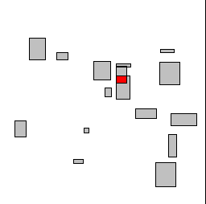
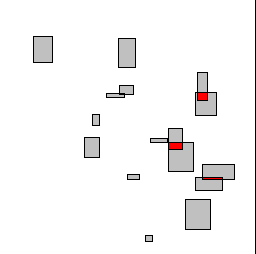

TestIntersectingRectangles.h
A collection of axis-aligned rectangles are randomly moving about in the plane. The boxes are gray initially. Whenever two rectangles intersect, their colors are changed to red. The intersection testing uses time coherency to speed up the collision detection system.
|  |
|  |